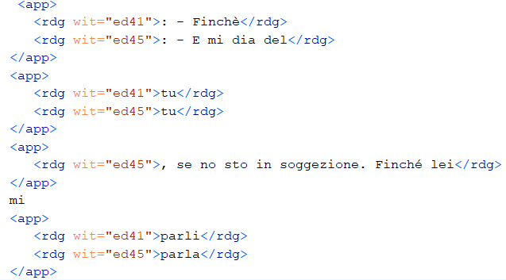
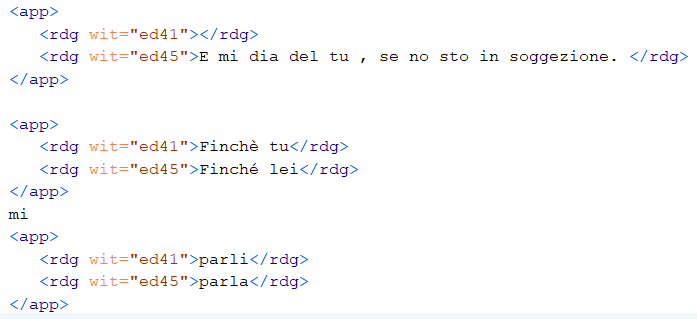
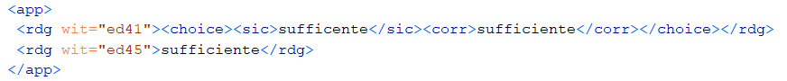

The first step in building our scholarly digital edition was the finding and digitization of the source material. In our case we had two witnesses of the text, one being the 1941 original publication in fourteen episode in the periodical Tempo , the other being the reconstruction made by the author starting from drafts of a first print edition that was lost due to the bombing of the publishing house. This last one was printed by Bompiani in 1945 and no modifications were done by the author ever since (that we are aware of).
Due to the invisibility and marginalization of women in literature, the finding of the original sources is not always simple, and there was no mean for us to have access to the original Bompiani edition. Nonetheless, considering that the text has not been subject of more authorial modifications and that we are not interested in analysing minor formal editorial differences in our research, we decided to use the text of the most recent republication (2019) of the Novel by Feltrinelli. This text was directly acquired in epub format, that we then proceeded to convert in a txt format to be able to easier manipulate it.
Regarding the first periodical publication, we were able to acquire photographs of each episode manually thanks to the collaboration with “Archivio Paola Masino” a subsection of the “Archivio del Novecento” of Sapienza University of Rome. The text was then digitized by a combination of manual work and iPhone embedded OCR technology.
As mentioned, the images where simply manually acquired with a phone for transcription purposes. Only in a second moment we decided that it could be worth including them in the edition: the aim is to have high quality images that we are currently trying to obtain from libraries passing through the “document delivery” service of the ACNP catalogue. We envision these will be transformed in IIIF images and properly handled to achieve the best possible visualization and better interoperability.
However, at the present moment we still decided to include the images we had: in order to do so we had to stitch different images together in order to recreate the entirety of the page, this process was done with the help of Quick Picture Tools a free online tool for image editing.
Once we had our plain texts we proceeded with the collation step to help us highlight the different readings. To handle this step properly we decided to combine analogic work with automation.
Firstly we studied the text in order to identify substantial variations, if there were blocks of text that were moved or if the overall structure had been changed during the authorial revision.
Secondly, we used collateX software to highlight textual differences, especially formal variants. We wrote a small python script that allowed us to input plain txt files and returned an already TEI encoded text, which is one of the featured outputs provided by collateX. This method, even if it helped in speeding up the collation, presented many weak points:
- The code was very slow when asked to parse long text documents, for this reason we had to split the text into subsections. The splitting was done according to our interpretation of the text, trying to individuate blocks of text that could be split and compared on their own minimizing possible alignment errors of the machine.
- We still had to correct the output that was at times wrong, especially in the case of long sentences where the modifications involved more than a single word. Let’s take this example, where the machine aligned “tu” in different sentences, where really the pronoun had different roles in the two different sentences. The collateX output:

That we corrected manually to align the different readings starting from “Finché” as well as highlighting the addition of “E mi dia del tu…” made in the 1945 edition:

As one can note from the code above, we also had to integrate empty readings to encode additions and deletions.
It is worth mentioning that, our “dialogue” with the machine work turned out to be particularly interesting because it revealed problems or aspects that, being this our first attempt in creating a scholarly digital edition, we had not previously envisioned. For example, collateX was very thorough in highlighting every typographic or punctuation difference, such as how dialogues were written – with hyphens in 1941 edition, with quotation marks in the Feltrinelli text – and therefore made us reflect on whether we wanted to include this information in our edition or in general how to handle it.
As far as typographic choices are concerned, we decided that they were not meaningful for our research and decided to harmonize manually the two texts, adopting hyphens, then rerun the collation. The second main modification concerns grammatical variations or mistakes, mainly present in the 1941 edition. These were also not meaningful to us, so we decided to encode them in such a way that allowed to handle later the choice of showing different readings or not:

According to our theoretical background and research question (see editorial notes) we were mainly interested in substantial changes that could highlight how the dialogue with the censor and the editor gave form to the text. As we argue, these changes, made by the author but at the same time against the authorial will, are not something that should be ignored or revised in favour of a supposed authorial preference, but they stand as a building block of the novel itself. Therefore, we decided to adopt a parallel method segmentation model for variant encoding, without any <lem> specification for a base text, to favour a neutral comparison of the text and stimulate diverse user’s textual interpretations.
We also cared about highlighting different text structure, knowing that the first edition had strict length limitations for episode, it seemed useful to encode the beginning and end of each episode as a peculiar structure compared to the printed book structure.
To do so we adopted <div> tags for the 1945 edition to encode different chapters (they are the same in the Tempo edition), whereas we adopted <milestones> tags to encode the beginning of each single episode of the 1941 edition.
Finally, needing to connect our images to the text for visualization purposes we used the <pb> tag with @facs attribute.
The edition is currently visualized with EVT a open source tool specifically crafted to visualize XML TEI encoded editions.
This was useful to us in the context of this in progress publication because it allowed us to visualize our work in a relatively simple way, facilitating the simultaneous comparison of the witnesses as we envisioned.
The employment of this tool, which requires the customization of a json file with pre-set variables, also required us to revise and rework our xml to meet the pre-set parameters specifications. This was not always an evident process since we had to “play” with the code a bit before properly understanding the features of the interface and how to modify them according to our goals.
Nonetheless, EVT is also very limited in terms of visualization possibilities, as well as very traditional and it seems somehow outdated and insufficient as a space for a text that escapes and challenges the norms of literature and traditions in so many ways. Sadly, a more experimental and innovative editorialization of such space, that better suits the nature of the novel requires skills and time resources that we don’t have in the present moment. It would be interesting to create a space where the text can be explored in unusual ways, by fragmenting it and recompose it according to some other criterion, such as a specific role of the Houswife or the presence of a particular character, a particular setting and so on.
Resuming from this discourse on the editorialization of our space, we would like to highlight that we did approach the work with this mindset, and, for this reason, we also started working on some alternative XML encoding and some XSL transformations to explore other possibilities of visualization and research.
Working in this direction, we did produce
- some rudimental tables for variant readings by means of xsl code
- an alternative work in progress XML modelled focusing on close reading interpretation of the novel. Here, for example, in order to highlight the core theme of the critic of societal roles and structures, every different “role” the protagonist was portraying during the novel was differentiated with the tag <persona> inside the tag <person> within the <profileDesc> section.